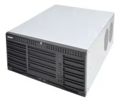
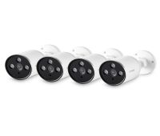
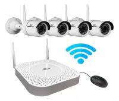

Las redes de alta velocidad son los medios por los cuales se facilita el intercambio de información a través de conexiones entre computadoras u ordenadores (internet). Estas redes facilitan tanto la comunicación entre personas así como la transmisión de datos.


